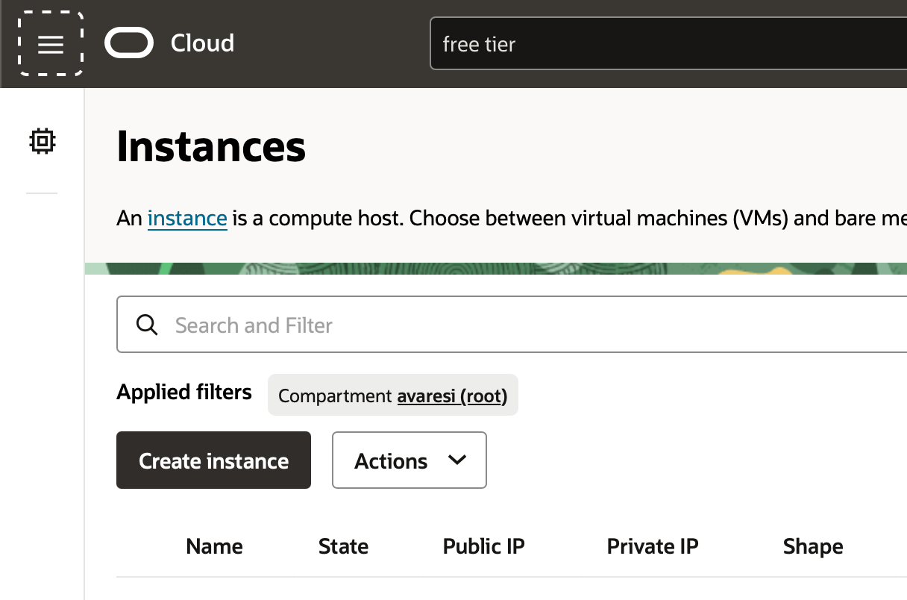
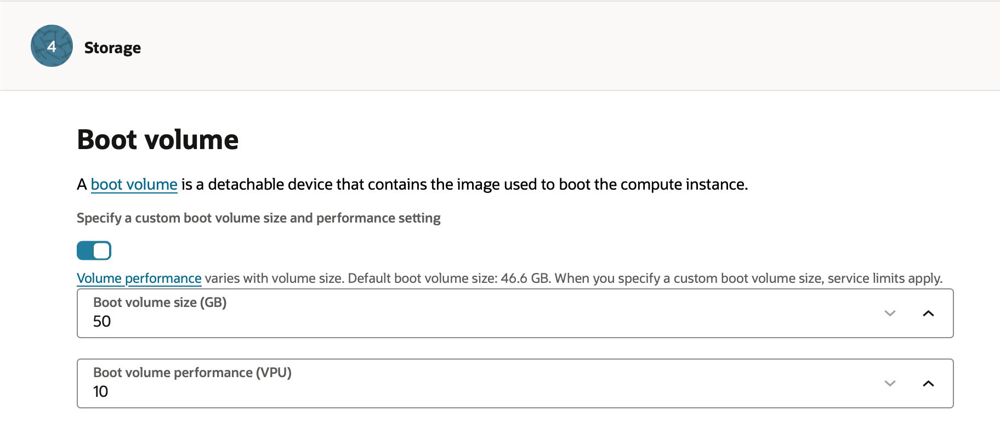
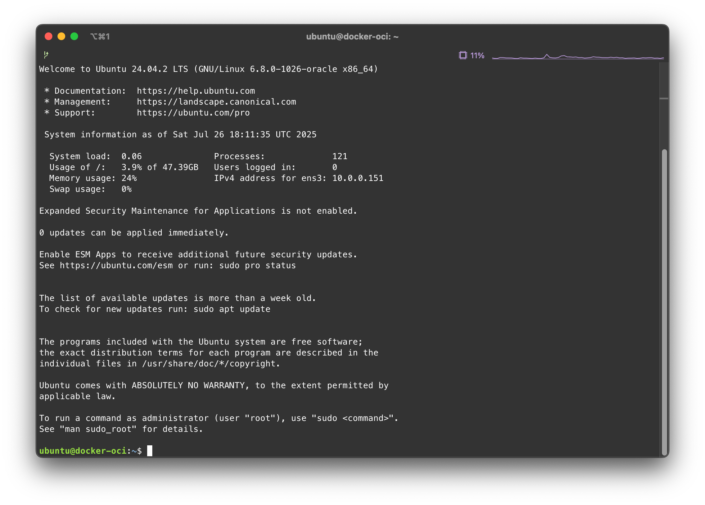

Predisponi server Docker su Oracle OCI (free tier)
[documento editato il 2025-07-26]
Oracle nella piattaforma Oracle Cloud Infrastructure (OCI) mette a dispisizione un ottimo tier gratuito In questo tier sono disponibili risorse per creare instanze di macchine virtuali nel piano che viene indicato come always-free.
In particolare si hanno a disposizione:
- due instanze AMD x86_64 con 1/8 OCPU (corrispondenti a 2 vCPU) e 1GB di RAM.
- una istanza ARM-based 4 core e 24 GB di RAM
Inoltre si hanno a disposizione 200GB di blocco dati da utilizzare come memoria di massa. Siccome il minimo utilizzabile per ogni istanza è pari a 49GB, alla fine si consiglia di utilizzare:
- 100GB per la istanza ARM-Based
- 50GB per ogni istanza AMD
Ubuntu su istanza VM.Standard.A1.Flex
Di seguito si riportano i passi necessari per la creazione dell'istanza gratuita.
Selezionare creazione di Compute-Instance
Dal menù principale di OCI selezionare la voce Compute->Instances

E dalla pagina che si presenta selezionare il pulsante Create Instance

1. Creazione dell'istanza: Basic informations
Compilare il form con le informazioni richieste:
- Name: Nome dell'istanza, ad esempio
docker-oci - Compartment: Il compartment in cui si vuole creare l'istanza. Se è la prima volta ci sarà un solo compartment chiamato (root).
Selezionare il sistema operativo: premere il pulsante Change image e
selezionare la voce Canonical Ubuntu 24.04; premere Select image.
Selezionare il tipo di istanza: quella proposta di default
dovrebbe già essere corretta, in ogni caso selezionare VM.Standard.E2.1.Micro.
Premere Next per proseguire.
2. Security
Lasciare le opzioni di default e premere Next.
3. Networking
Se è già stato creato un Virtual Cloud Network (VCN) si può selezionare quello esistente, altrimenti si può creare un nuovo VCN.
Scegliere un nome per il VCN, ad esempio docker-oci-vcn.
Se si crea un nuovo VCN spuntare Create a new virtual cloud network e lasciare le opzioni di default.
Spuntare la voce Create a new public subnet e lasciare le opzioni di default.
Sarebbe opportuno selezionare la voce Assign a public IPv4 address per poter accedere all'istanza da internet, ma se la subnet viene create con questa opzione, la voce pare non selezionabile
!! MOLTO IMPORTANTE !!
Occorre aggiungere una chiave SSH per poter accedere all'istanza una volta creata. Selezionare la voce Add SSH keys e incollare la chiave pubblica SSH generata in precedenza, o se non si ha c'è la possibilità di generarla direttamente da questa pagina.
NOTA
senza una chiave SSH non sarà possibile accedere all'istanza una volta creata.
4. Storage
Occorre ora creare il disco di boot per l'istanza.
Spuntare la voce Specify a custom boot volume size and performance settings
Scegliere la dimensione del disco di boot, ad esempio 50GB.

NOTA.
50GB è il minimo richiesto per le istanze AMD. Nel piano free tier si hanno a disposizione un massimo di 200GB suddivisi tra le istanze.
Lasciare le altre opzioni di default e premere Next.
5. Review and create
Vengono ora presentate le informazioni inserite, se tutto è corretto premere il pulsante Create.
Come si può notare alla sezione Networking viene indicato che la subnet è pubblica, e l'opzione Public IPv4 address è impostata a Yes.
Attendere la creazione dell'istanza
Ora parte automaticamente la creazione dell'istanza, che può richiedere qualche minuto.
Al termine, selezionare dal menù Instances l'istanza appena creata e dal tab Details si può vedere l'indirizzo IP pubblico assegnato all'istanza e lo username.
Possiamo ora provare a connetterci tramite SSH alla'istanza utilizzando l'indirizzo IP pubblico
e lo username ubuntu e la chiave SSH precedentemente inserita.
ssh -i [path/to/your/private/key] ubuntu@[public.ip.address]
Se tutto è andato a buon fine si dovrebbe essere connessi all'istanza.

Ora occorre assicurarsi di avere settato il firewall per permettere al traffico internet di raggiungere l'istanza.
Connettersi all'istanza tramite connessioe SSH ed scaricare l'immagine necessaria per installare il da rete Proxmox:
sudo -i
cd /boot/efi
wget https://boot.netboot.xyz/ipxe/netboot.xyz-arm64.efi
Configurare Ubuntu
Ora che l'istanza è pronta, possiamo procedere con la configurazione di Ubuntu per l'utilizzo di Docker.
Aggiornare il sistema
La prima cosa da fare è aggiornare il sistema operativo all'ultima versione disponibile.
sudo apt update && sudo apt upgrade -y
Al termine dell'aggiornamento, è consigliabile riavviare l'istanza per assicurarsi che tutte le modifiche abbiano effetto.
sudo reboot
Creare una password per l'utente ubuntu
La password non è richiesta per l'utente ubuntu ma è consigliabile impostarla per poter utilizzare
la console messa a disposizione da OCI.
sudo passwd ubuntu
Alla richiesta inserire una password sicura e confermarla.
Installare Docker
Per installare Docker su Ubuntu, occorre predisporre il sistema con i certificati e il repository ufficiale di Docker.
# Add Docker's official GPG key:
sudo apt-get update
sudo apt-get install ca-certificates curl
sudo install -m 0755 -d /etc/apt/keyrings
sudo curl -fsSL https://download.docker.com/linux/ubuntu/gpg -o /etc/apt/keyrings/docker.asc
sudo chmod a+r /etc/apt/keyrings/docker.asc
# Add the repository to Apt sources:
echo \
"deb [arch=$(dpkg --print-architecture) signed-by=/etc/apt/keyrings/docker.asc] https://download.docker.com/linux/ubuntu \
$(. /etc/os-release && echo "${UBUNTU_CODENAME:-$VERSION_CODENAME}") stable" | \
sudo tee /etc/apt/sources.list.d/docker.list > /dev/null
sudo apt-get update
A questo punto è possibile effettuare l'installazione:
sudo apt-get install docker-ce docker-ce-cli containerd.io docker-buildx-plugin docker-compose-plugin
Abilitare utente corrente per l'utilizzo di Docker
Per poter utilizzare Docker senza dover utilizzare il comando sudo, è necessario aggiungere l'utente corrente al gruppo docker.
sudo usermod -aG docker $USER
Dopo aver eseguito questo comando, è necessario disconnettersi e riconnettersi per applicare le modifiche.
Per verificare che tutto funzioni correttamente, è possibile eseguire il comando:
docker run hello-world
Se tutto è andato a buon fine, si dovrebbe vedere un messaggio di benvenuto da parte di Docker.
Ripulire il sistema
Iniziamo ripulendo docker:
docker system prune -a --volumes
Proseguiamo ora con la pulizia del sistema:
sudo apt autoremove --purge -y
sudo apt clean
sudo rm -rf /var/lib/apt/lists/*
Altre ulteriori configurazioni opzionali
Di seguito alcune configurazioni opzionali che possono essere utili: